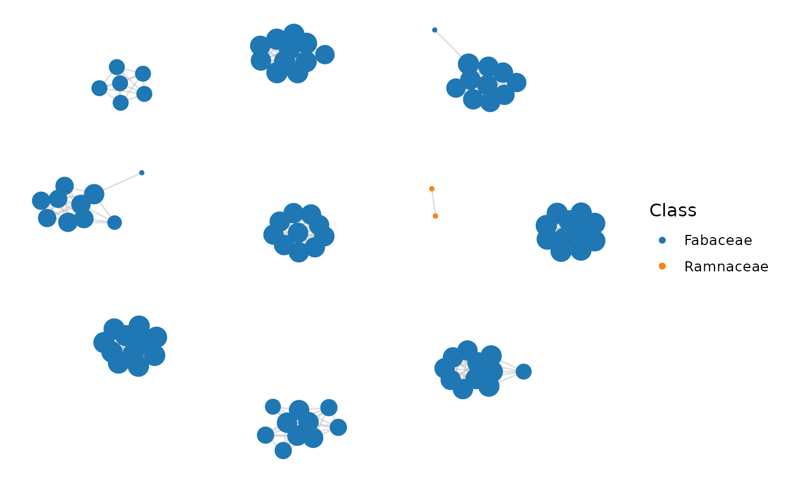

Inference and Analysis of Synteny Networks
Fabricio Almeida-Silva
VIB-UGent Center for Plant Systems Biology, Ghent, BelgiumDepartment of Plant Biotechnology and Bioinformatics, Ghent, BelgiumYves Van de Peer
VIB-UGent Center for Plant Systems Biology, Ghent, BelgiumDepartment of Plant Biotechnology and Bioinformatics, Ghent, BelgiumSource:
vignettes/syntenet.Rmd
syntenet.RmdInstallation
if(!requireNamespace('BiocManager', quietly = TRUE))
install.packages('BiocManager')
BiocManager::install("syntenet")Data description
For this vignette, we will use the proteomes and gene annotation of the algae species Ostreococcus lucimarinus and Ostreococcus sp RCC809, which were obtained from Pico-PLAZA 3.0 (Vandepoele et al. 2013). 1
# Protein sequences
data(proteomes)
head(proteomes)
#> $Olucimarinus
#> AAStringSet object of length 7778:
#> width seq names
#> [1] 911 MTTMADERASIARVSVVKYGAI...VQLYTYPGSTNDPNFLLKLA* OL01G00010
#> [2] 789 MGGRRCFCSRSSPVGVGAPAPA...PPQCGADIEAGSEPPPDKCG* OL01G00020
#> [3] 618 MTRAKDAIVVDDGNDDDDDDDD...RDASASLALALAFSSEESVV* OL01G00030
#> [4] 547 MPTKAQCWVVSYARVRDGASRS...TGSVSARASIFGEQASFRKA* OL01G00040
#> [5] 319 MFTASHTTSKVTLRARVATQPR...HNGMALWRETTPKDSLIPAL* OL01G00050
#> ... ... ...
#> [7774] 274 MVGTRRASTSSSTSVAHGKDLI...PAAALINQTLLYAKELERIV* OL21G01780
#> [7775] 157 MSRLGTPPPPSPMQLLQEYYAH...LQSFCAWQRRHGNGKVKVET* OL21G01790
#> [7776] 98 AGRSALHWAARNGHVEVVEYLL...RGNRDVCEWLLDTPSLGLTRD OL21G01800
#> [7777] 270 MLADTRKTAGSSREALRSSIVA...VPTHANAYACAFVGLSRLEE* OL21G01810
#> [7778] 222 MVIDNAFDDNVKIVFDLTNQAP...ESGAVRSVEGEVCGAVLVDE* OL21G01820
#>
#> $Osp_RCC809
#> AAStringSet object of length 7492:
#> width seq names
#> [1] 274 MASTTGSAARRVFVDVEKTVNG...DVLSLGQGSLSGESSSSDEE* ORCC809_01G00010
#> [2] 175 MDQMRAANAQRSYLLFFVLFFL...SRRLLGRLDSEHTDLHPSWR* ORCC809_01G00020
#> [3] 403 MTAPRVRASRRATATAAATVTA...LTERDLRYMEPKATIEEWMG* ORCC809_01G00030
#> [4] 217 MTIDADGDDTLAPHAPAHGEVS...LIRLRGVEKTPTVDPPPPPP* ORCC809_01G00040
#> [5] 1691 RIEADEKSLLVFGKESPVRTAC...VRMGNNVVTSRYASSESEEDV ORCC809_01G00050
#> ... ... ...
#> [7488] 343 MVSPPSRRRRDRRAVERLHRAF...ALSGDFVDDNQPSSFVPETS* ORCC809_20G03240
#> [7489] 323 MRAQNAPGHIPGLAEHVQSVTK...AKKKLASSKLGKTKKSEGKD* ORCC809_20G03250
#> [7490] 337 MPRSTNGEEEEEEARAMEIMRL...PYSKAVERARASSYRVAESG* ORCC809_20G03260
#> [7491] 368 TTTVIGRHEHVISGYSLLKGIG...DDMIASCPHLASEILSSVAEM ORCC809_20G03270
#> [7492] 2123 RRVVCLTADFQSGTPAISDVFC...TNGQYRVDVKGVSDIAGNLAL ORCC809_20G03280
# Annotation (ranges)
data(annotation)
head(annotation)
#> GRangesList object of length 2:
#> $Olucimarinus
#> GRanges object with 7805 ranges and 10 metadata columns:
#> seqnames ranges strand | source type score phase
#> <Rle> <IRanges> <Rle> | <factor> <factor> <numeric> <integer>
#> [1] Chr_1 939-3671 - | JGI 2.0 gene NA <NA>
#> [2] Chr_1 3907-6927 + | JGI 2.0 gene NA <NA>
#> [3] Chr_1 7085-9160 + | JGI 2.0 gene NA <NA>
#> [4] Chr_1 9830-11480 + | JGI 2.0 gene NA <NA>
#> [5] Chr_1 11467-12599 - | JGI 2.0 gene NA <NA>
#> ... ... ... ... . ... ... ... ...
#> [7801] Chr_9 664411-665228 + | JGI 2.0 gene NA <NA>
#> [7802] Chr_9 665365-666519 - | JGI 2.0 gene NA <NA>
#> [7803] Chr_9 666657-667149 + | JGI 2.0 gene NA <NA>
#> [7804] Chr_9 667940-668878 + | JGI 2.0 gene NA <NA>
#> [7805] Chr_9 668907-670103 - | JGI 2.0 gene NA <NA>
#> ID name Name gene_id
#> <character> <CharacterList> <character> <character>
#> [1] OL01G00010 estExt_fgenesh1_pg.C..,pid OL01G00010 OL01G00010
#> [2] OL01G00020 estExt_fgenesh1_pg.C..,pid OL01G00020 OL01G00020
#> [3] OL01G00030 eugene.0100010004,pid OL01G00030 OL01G00030
#> [4] OL01G00040 estExt_fgenesh1_pg.C..,pid OL01G00040 OL01G00040
#> [5] OL01G00050 estExt_fgenesh1_pg.C..,pid OL01G00050 OL01G00050
#> ... ... ... ... ...
#> [7801] OL09G04130 eugene.0900010408,pid OL09G04130 OL09G04130
#> [7802] OL09G04140 e_gwEuk.9.282.1,pid OL09G04140 OL09G04140
#> [7803] OL09G04150 eugene.0900010410,pid OL09G04150 OL09G04150
#> [7804] OL09G04160 e_gwEuk.9.433.1,pid OL09G04160 OL09G04160
#> [7805] OL09G04170 eugene.0900010412,pid OL09G04170 OL09G04170
#> Parent pid
#> <CharacterList> <character>
#> [1] <NA>
#> [2] <NA>
#> [3] <NA>
#> [4] <NA>
#> [5] <NA>
#> ... ... ...
#> [7801] <NA>
#> [7802] <NA>
#> [7803] <NA>
#> [7804] <NA>
#> [7805] <NA>
#> -------
#> seqinfo: 41 sequences from an unspecified genome; no seqlengths
#>
#> $Osp_RCC809
#> GRanges object with 7492 ranges and 10 metadata columns:
#> seqnames ranges strand | source type score phase
#> <Rle> <IRanges> <Rle> | <factor> <factor> <numeric> <integer>
#> [1] chr_1 321-1142 - | JGI 2.0 gene NA <NA>
#> [2] chr_1 1463-2089 + | JGI 2.0 gene NA <NA>
#> [3] chr_1 2162-3370 - | JGI 2.0 gene NA <NA>
#> [4] chr_1 3774-4424 - | JGI 2.0 gene NA <NA>
#> [5] chr_1 4693-9924 - | JGI 2.0 gene NA <NA>
#> ... ... ... ... . ... ... ... ...
#> [7488] chr_9 982676-984077 + | JGI 2.0 gene NA <NA>
#> [7489] chr_9 984184-985615 - | JGI 2.0 gene NA <NA>
#> [7490] chr_9 986270-988382 - | JGI 2.0 gene NA <NA>
#> [7491] chr_9 989090-992371 + | JGI 2.0 gene NA <NA>
#> [7492] chr_9 992769-993908 + | JGI 2.0 gene NA <NA>
#> ID name Name
#> <character> <CharacterList> <character>
#> [1] ORCC809_01G00010 e_gw1.1.976.1 ORCC809_01G00010
#> [2] ORCC809_01G00020 e_gw1.1.1003.1 ORCC809_01G00020
#> [3] ORCC809_01G00030 fgenesh1_pm.chr_1_#_3 ORCC809_01G00030
#> [4] ORCC809_01G00040 e_gw1.1.811.1 ORCC809_01G00040
#> [5] ORCC809_01G00050 gw1.1.13.1 ORCC809_01G00050
#> ... ... ... ...
#> [7488] ORCC809_09G05830 fgenesh1_pm.chr_9_#_.. ORCC809_09G05830
#> [7489] ORCC809_09G05840 e_gw1.9.398.1 ORCC809_09G05840
#> [7490] ORCC809_09G05850 fgenesh1_kg.chr_9_#_.. ORCC809_09G05850
#> [7491] ORCC809_09G05860 e_gw1.9.775.1 ORCC809_09G05860
#> [7492] ORCC809_09G05870 EuGene.0900010631 ORCC809_09G05870
#> gene_id Parent pid
#> <character> <CharacterList> <character>
#> [1] ORCC809_01G00010 28626
#> [2] ORCC809_01G00020 27594
#> [3] ORCC809_01G00030 55371
#> [4] ORCC809_01G00040 28519
#> [5] ORCC809_01G00050 10027
#> ... ... ... ...
#> [7488] ORCC809_09G05830 59046
#> [7489] ORCC809_09G05840 37114
#> [7490] ORCC809_09G05850 54927
#> [7491] ORCC809_09G05860 37483
#> [7492] ORCC809_09G05870 94164
#> -------
#> seqinfo: 41 sequences from an unspecified genome; no seqlengthsData preprocessing
To detect synteny and infer synteny networks, syntenet
requires two objects as input:
- seq: A list of AAStringSet objects containing the translated sequences of primary transcripts for each species.
- annotation: A GRangesList or CompressedGRangesList object containing the coordinates for the genes in seq.
The first part of the pipeline consists in processing the data to
make it match a standard structure. However, before processing the data
for synteny detection, you must use the function
check_input() to check if your data can enter the pipeline.
This function checks the input data for 3 required conditions:
Names of seq list (i.e.,
names(seq)) match the names of annotation GRangesList/CompressedGRangesList (i.e.,names(annotation))For each species (list elements), the number of sequences in seq is not greater than the number of genes in annotation. This is a way to ensure users do not input the translated sequences for multiple isoforms of the same gene (generated by alternative splicing). Ideally, the number of sequences in seq should be equal to the number of genes in annotation, but this may not always stand true because of non-protein-coding genes.
For each species, sequence names (i.e.,
names(seq[[x]]), equivalent to FASTA headers) match gene names inannotation.
Let’s check if the example data sets satisfy these 3 criteria:
check_input(proteomes, annotation)
#> [1] TRUEAs you can see, the data passed the checks. Now, let’s process them
with the function process_input.
This function processes the input sequences and annotation to:
Remove whitespace and anything after it in sequence names (i.e.,
names(seq[[x]]), which is equivalent to FASTA headers), if there is any.Remove period followed by number at the end of sequence names, which typically indicates different isoforms of the same gene (e.g., Arabidopsis thaliana’s transcript AT1G01010.1, which belongs to gene AT1G01010).
Add a unique species identifier to sequence names. The species identifier consists of the first 3-5 strings of the element name. For instance, if the first element of the seq list is named “Athaliana”, each sequence in it will have an identifier “Atha_” added to the beginning of each gene name (e.g., Atha_AT1G01010).
If sequences have an asterisk (*) representing stop codon, remove it.
Add a unique species identifier (same as above) to gene and chromosome names of each element of the annotation GRangesList/CompressedGRangesList.
Filter each element of the annotation GRangesList/CompressedGRangesList to keep only seqnames, ranges, and gene ID.
Let’s process our input data:
pdata <- process_input(proteomes, annotation)
# Looking at the processed data
pdata$seq
#> $Olucimarinus
#> AAStringSet object of length 7778:
#> width seq names
#> [1] 910 MTTMADERASIARVSVVKYGAI...DVQLYTYPGSTNDPNFLLKLA Olu_OL01G00010
#> [2] 788 MGGRRCFCSRSSPVGVGAPAPA...FPPQCGADIEAGSEPPPDKCG Olu_OL01G00020
#> [3] 617 MTRAKDAIVVDDGNDDDDDDDD...DRDASASLALALAFSSEESVV Olu_OL01G00030
#> [4] 546 MPTKAQCWVVSYARVRDGASRS...VTGSVSARASIFGEQASFRKA Olu_OL01G00040
#> [5] 318 MFTASHTTSKVTLRARVATQPR...LHNGMALWRETTPKDSLIPAL Olu_OL01G00050
#> ... ... ...
#> [7774] 273 MVGTRRASTSSSTSVAHGKDLI...IPAAALINQTLLYAKELERIV Olu_OL21G01780
#> [7775] 156 MSRLGTPPPPSPMQLLQEYYAH...NLQSFCAWQRRHGNGKVKVET Olu_OL21G01790
#> [7776] 97 AGRSALHWAARNGHVEVVEYLL...QRGNRDVCEWLLDTPSLGLTR Olu_OL21G01800
#> [7777] 269 MLADTRKTAGSSREALRSSIVA...TVPTHANAYACAFVGLSRLEE Olu_OL21G01810
#> [7778] 221 MVIDNAFDDNVKIVFDLTNQAP...QESGAVRSVEGEVCGAVLVDE Olu_OL21G01820
#>
#> $Osp_RCC809
#> AAStringSet object of length 7492:
#> width seq names
#> [1] 273 MASTTGSAARRVFVDVEKTVNG...WDVLSLGQGSLSGESSSSDEE Osp_ORCC809_01G00010
#> [2] 174 MDQMRAANAQRSYLLFFVLFFL...SSRRLLGRLDSEHTDLHPSWR Osp_ORCC809_01G00020
#> [3] 402 MTAPRVRASRRATATAAATVTA...ALTERDLRYMEPKATIEEWMG Osp_ORCC809_01G00030
#> [4] 216 MTIDADGDDTLAPHAPAHGEVS...SLIRLRGVEKTPTVDPPPPPP Osp_ORCC809_01G00040
#> [5] 1690 RIEADEKSLLVFGKESPVRTAC...SVRMGNNVVTSRYASSESEED Osp_ORCC809_01G00050
#> ... ... ...
#> [7488] 342 MVSPPSRRRRDRRAVERLHRAF...RALSGDFVDDNQPSSFVPETS Osp_ORCC809_20G03240
#> [7489] 322 MRAQNAPGHIPGLAEHVQSVTK...FAKKKLASSKLGKTKKSEGKD Osp_ORCC809_20G03250
#> [7490] 336 MPRSTNGEEEEEEARAMEIMRL...LPYSKAVERARASSYRVAESG Osp_ORCC809_20G03260
#> [7491] 367 TTTVIGRHEHVISGYSLLKGIG...YDDMIASCPHLASEILSSVAE Osp_ORCC809_20G03270
#> [7492] 2122 RRVVCLTADFQSGTPAISDVFC...QTNGQYRVDVKGVSDIAGNLA Osp_ORCC809_20G03280
pdata$annotation
#> $Olucimarinus
#> GRanges object with 7805 ranges and 1 metadata column:
#> seqnames ranges strand | gene
#> <Rle> <IRanges> <Rle> | <character>
#> [1] Olu_Chr_1 939-3671 * | Olu_OL01G00010
#> [2] Olu_Chr_1 3907-6927 * | Olu_OL01G00020
#> [3] Olu_Chr_1 7085-9160 * | Olu_OL01G00030
#> [4] Olu_Chr_1 9830-11480 * | Olu_OL01G00040
#> [5] Olu_Chr_1 11467-12599 * | Olu_OL01G00050
#> ... ... ... ... . ...
#> [7801] Olu_Chr_9 664411-665228 * | Olu_OL09G04130
#> [7802] Olu_Chr_9 665365-666519 * | Olu_OL09G04140
#> [7803] Olu_Chr_9 666657-667149 * | Olu_OL09G04150
#> [7804] Olu_Chr_9 667940-668878 * | Olu_OL09G04160
#> [7805] Olu_Chr_9 668907-670103 * | Olu_OL09G04170
#> -------
#> seqinfo: 21 sequences from an unspecified genome; no seqlengths
#>
#> $Osp_RCC809
#> GRanges object with 7492 ranges and 1 metadata column:
#> seqnames ranges strand | gene
#> <Rle> <IRanges> <Rle> | <character>
#> [1] Osp_chr_1 321-1142 * | Osp_ORCC809_01G00010
#> [2] Osp_chr_1 1463-2089 * | Osp_ORCC809_01G00020
#> [3] Osp_chr_1 2162-3370 * | Osp_ORCC809_01G00030
#> [4] Osp_chr_1 3774-4424 * | Osp_ORCC809_01G00040
#> [5] Osp_chr_1 4693-9924 * | Osp_ORCC809_01G00050
#> ... ... ... ... . ...
#> [7488] Osp_chr_9 982676-984077 * | Osp_ORCC809_09G05830
#> [7489] Osp_chr_9 984184-985615 * | Osp_ORCC809_09G05840
#> [7490] Osp_chr_9 986270-988382 * | Osp_ORCC809_09G05850
#> [7491] Osp_chr_9 989090-992371 * | Osp_ORCC809_09G05860
#> [7492] Osp_chr_9 992769-993908 * | Osp_ORCC809_09G05870
#> -------
#> seqinfo: 20 sequences from an unspecified genome; no seqlengthsSynteny network inference
Now that we have our processed data, we can infer the synteny network. To detect synteny, we need the tabular output from BLASTp (Altschul et al. 1997) or similar programs. Here, we give you two options:
Running BLASTp, DIAMOND (Buchfink, Reuter, and Drost 2021) or similar programs on the command line, saving the output in tabular format and reading the output table as a data frame (e.g., with the base R function
read.table()).Using a helper function in
syntenetnamedrun_diamond(), which runs DIAMOND from the R session and automatically parses its output to a data frame.
Here, we will use run_diamond() to demonstrate how it
works. Needless to say, you need to have DIAMOND installed in your
machine and in your PATH to run this function. To check if you have
DIAMOND installed, use the function
diamond_is_installed().
if(diamond_is_installed()) {
diamond <- run_diamond(seq = pdata$seq)
}Phylogenomic profiling
After inferring the synteny network, the first thing you would want to do is cluster your network and identify which phylogenetic groups are contained in each cluster. This is what we call phylogenomic profiling. This way, you can identify clade-specific clusters, and highly conserved clusters, for instance.
To obtain the phylogenomic profiles, you first need to cluster your
network. syntenet identifies network clusters using the
infomap algorithm. Here, we will cluster a network of BUSCO (Best
Universal Single-Copy Orthologous) genes for some angiosperm genomes.
The original dataset was obtained from Zhao and
Schranz (2019).
# Load example data and take a look at it
data(network)
head(network)
#> node1 node2
#> 1 cca_23646 Lang_109327134
#> 2 cca_23646 Lang_109328075
#> 3 cca_23646 Mnot_21394516
#> 4 cca_23646 Zjuj_107413994
#> 5 cca_23646 adu_Aradu.8SN53
#> 6 cca_23646 car_14082.1
# Cluster network
clusters <- cluster_network(network)
head(clusters)
#> Gene Cluster
#> 1 cca_23646 1
#> 2 cca_23668 2
#> 3 cca_32926 3
#> 4 cca_26186 4
#> 5 cca_24381 5
#> 6 cca_24396 6Now that each gene has been assigned to a cluster, we can identify the phylogenomic profiles of each cluster. This function returns a list of 2 elements:
A matrix of phylogenomic profiles, with clusters in rows and species in columns.
An hclust object containing the results of Ward’s clustering on a matrix of Jaccard distances obtained from the phylogenomic profiles matrix.
# Phylogenomic profiling
profiles <- phylogenomic_profile(clusters)
# Exploring the output
str(profiles)
#> List of 2
#> $ profile_matrix: int [1:2411, 1:25] 1 1 1 1 1 1 1 1 1 1 ...
#> ..- attr(*, "dimnames")=List of 2
#> .. ..$ : chr [1:2411] "335" "262" "1142" "1202" ...
#> .. ..$ : chr [1:25] "adu" "car" "cca" "fve" ...
#> $ hclust :List of 7
#> ..$ merge : int [1:2410, 1:2] -18 -1125 -21 -1010 -36 -83 -1174 -115 -125 -127 ...
#> ..$ height : num [1:2410] 0 0 0 0 0 0 0 0 0 0 ...
#> ..$ order : int [1:2411] 335 262 1142 1202 1258 395 1393 663 599 595 ...
#> ..$ labels : chr [1:2411] "1" "2" "3" "4" ...
#> ..$ method : chr "ward.D"
#> ..$ call : language stats::hclust(d = dist_mat, method = "ward.D")
#> ..$ dist.method: chr "jaccard"
#> ..- attr(*, "class")= chr "hclust"
head(profiles$profile_matrix)
#>
#> adu car cca fve gma hlu jcu Lang lja lus mdo mes Mnot mtr pbr pmu ppe
#> 335 1 0 1 0 1 0 0 1 0 0 1 0 1 1 0 1 1
#> 262 1 0 1 0 1 0 0 1 1 0 1 0 1 1 1 1 1
#> 1142 1 0 1 0 1 0 0 0 1 0 2 1 1 1 0 1 1
#> 1202 1 1 1 1 2 0 1 1 0 2 1 0 1 0 0 0 1
#> 1258 1 1 1 0 2 0 0 0 1 2 1 0 1 0 0 1 1
#> 395 1 0 1 1 1 0 0 0 0 1 1 1 1 1 1 1 1
#>
#> ptr pvu rco roc tpr van vra Zjuj
#> 335 1 0 0 1 1 0 0 0
#> 262 0 1 0 1 1 1 0 0
#> 1142 0 1 0 1 1 1 0 0
#> 1202 1 1 1 0 1 0 0 1
#> 1258 1 1 0 0 1 0 0 1
#> 395 1 0 0 1 1 0 0 1As a plot is worth a thousand words (or numbers), you can visualize
the phylogenomic profiles as a heatmap with
plot_profiles(). Let’s also add some species
annotation.
# Create a vector of custom species order to plot
species_order <- c(
"vra", "van", "pvu", "gma", "cca", "tpr", "mtr", "adu", "lja",
"Lang", "car", "pmu", "ppe", "pbr", "mdo", "roc", "fve",
"Mnot", "Zjuj", "jcu", "mes", "rco", "lus", "ptr"
)
# Create a data frame of families for each species
species_annotation <- data.frame(
Species = species_order,
Family = c(rep("Fabaceae", 11), rep("Rosaceae", 6),
"Moraceae", "Ramnaceae", rep("Euphorbiaceae", 3),
"Linaceae", "Salicaceae")
)
head(species_annotation)
#> Species Family
#> 1 vra Fabaceae
#> 2 van Fabaceae
#> 3 pvu Fabaceae
#> 4 gma Fabaceae
#> 5 cca Fabaceae
#> 6 tpr Fabaceae
# Plot phylogenomic profiles
plot_profiles(
profiles, species_annotation,
cluster_species = species_order,
cluster_columns = TRUE
)
The heatmap is a nice way to observe patterns. For instance, you can see some Rosaceae-specific clusters, Fabaceae-specific clusters, and highly conserved ones as well.
If you want to explore in more details the group-specific clusters,
you can use the function find_GS_clusters(). For that, you
only need to input the profiles matrix and a data frame of species
annotation (i.e., species groups).
# Find group-specific clusters
gs_clusters <- find_GS_clusters(profiles$profile_matrix, species_annotation)
head(gs_clusters)
#> Group Percentage Cluster
#> 2 Fabaceae 90.91 1156
#> 21 Fabaceae 81.82 1170
#> 5 Ramnaceae 100.00 1279
#> 22 Fabaceae 90.91 1305
#> 23 Fabaceae 81.82 1309
#> 24 Fabaceae 90.91 1310
# How many family-specific clusters are there?
nrow(gs_clusters)
#> [1] 394As you can see, there are 394 family-specific clusters in the network. Let’s plot a heatmap of group-specific clusters only.
# Filter profiles matrix to only include group-specific clusters
pgs <- profiles
pgs$profile_matrix <- pgs$profile_matrix[rownames(pgs$profile_matrix) %in%
gs_clusters$Cluster, ]
# Plot heatmap
plot_profiles(
pgs, species_annotation,
cluster_species = species_order,
cluster_columns = TRUE
)
Pretty cool, huh? You can also visualize clusters as a network plot
with the function plot_network(). For example, let’s
visualize the group-specific clusters.
# 1) Plot first GS cluster
id <- gs_clusters$Cluster[1]
plot_network(network, clusters, cluster_id = id)
# 2) A combination of clusters
id <- gs_clusters$Cluster[1:10]
plot_network(network, clusters, cluster_id = id)
# 3) Coloring nodes by family
genes <- unique(c(network$node1, network$node2))
gene_df <- data.frame(
Gene = genes,
Species = unlist(lapply(strsplit(genes, "_"), head, 1))
)
gene_df <- merge(gene_df, species_annotation)[, c("Gene", "Family")]
head(gene_df)
#> Gene Family
#> 1 adu_Aradu.3W61T Fabaceae
#> 2 adu_Aradu.FQ8CE Fabaceae
#> 3 adu_Aradu.0W76I Fabaceae
#> 4 adu_Aradu.M4JP1 Fabaceae
#> 5 adu_Aradu.B26Z6 Fabaceae
#> 6 adu_Aradu.PLM7U Fabaceae
plot_network(network, clusters, cluster_id = id, color_by = gene_df)
# 4) Interactive visualization
plot_network(network, clusters, cluster_id = id,
interactive = TRUE, dim_interactive = c(500, 400))Microsynteny-based phylogeny reconstruction
Finally, you can use the information on presence/absence of clusters in each species to reconstruct a microsynteny-based phylogeny.
To do that, you first need to binarize the profiles matrix (0s and 1s
representing absence and presence, respectively) and transpose it. This
can be done with binarize_and_tranpose().
bt_mat <- binarize_and_transpose(profiles$profile_matrix)
# Looking at the first 5 rows and 5 columns of the matrix
bt_mat[1:5, 1:5]
#>
#> 335 262 1142 1202 1258
#> adu 1 1 1 1 1
#> car 0 0 0 1 1
#> cca 1 1 1 1 1
#> fve 0 0 0 1 0
#> gma 1 1 1 1 1Now, you can use this transposed binary matrix as input to IQTREE [minh2020iq] to infer a phylogeny. Here, once again, we give you 2 options:
Using
profiles2phylip()to write the transposed binary matrix to a PHYLIP file and running IQTREE from the command line. As you are inferring a phylogeny from the profiles matrix, you need to specify-st MORPHto indicate you have a binary alignment.Using the helper function
infer_microsynteny_phylogeny(), which allows you to run IQTREE from an R session. You need to have IQTREE installed in your machine and in your PATH to run this function. You can check if you have IQTREE installed withiqtree_is_installed().
For the sake of demonstration, we will infer a phylogeny with
infer_microsynteny_phylogeny() using the profiles for BUSCO
genes for six legume species only. We will also remove non-variable
sites (i.e., clusters that are present in all species or absent in all
species). However, we’re only using this filtered data set for speed
issues. For real-life applications, the best thing to do is to
include phylogenomic profiles for all genes (not only
BUSCO genes).
# Leave only 6 legume species and P. mume as an outgroup for testing purposes
included <- c("gma", "pvu", "vra", "van", "cca", "pmu")
bt_mat <- bt_mat[rownames(bt_mat) %in% included, ]
# Remove non-variable sites
bt_mat <- bt_mat[, colSums(bt_mat) != length(included)]
if(iqtree_is_installed()) {
phylo <- infer_microsynteny_phylogeny(bt_mat, outgroup = "pmu",
threads = 1)
}The output of infer_microsynteny_phylogeny() is a
character vector with paths to the output files from IQTREE. Usually,
you are interested in the file ending in .treefile. This is the
species tree in Newick format, and it can be visualized with your
favorite tree viewer. We strongly recommend using the
read.tree() function from the Bioconductor package treeio
(Wang et al. 2020) to read the tree, and
visualizing it with the ggtree Bioc package (Yu
et al. 2017). For example, let’s visualize a microsynteny-based
phylogeny for 123 angiosperm species, whose phylogenomic profiles were
obtained from Zhao et al. (2021).
data(angiosperm_phylogeny)
# Plotting the tree
library(ggtree)
ggtree(angiosperm_phylogeny) +
geom_tiplab(size = 3) +
xlim(0, 0.3)
Session information
This document was created under the following conditions:
sessionInfo()
#> R version 4.1.3 (2022-03-10)
#> Platform: x86_64-pc-linux-gnu (64-bit)
#> Running under: Ubuntu 20.04.4 LTS
#>
#> Matrix products: default
#> BLAS/LAPACK: /usr/lib/x86_64-linux-gnu/openblas-pthread/libopenblasp-r0.3.8.so
#>
#> locale:
#> [1] LC_CTYPE=en_US.UTF-8 LC_NUMERIC=C
#> [3] LC_TIME=en_US.UTF-8 LC_COLLATE=en_US.UTF-8
#> [5] LC_MONETARY=en_US.UTF-8 LC_MESSAGES=en_US.UTF-8
#> [7] LC_PAPER=en_US.UTF-8 LC_NAME=C
#> [9] LC_ADDRESS=C LC_TELEPHONE=C
#> [11] LC_MEASUREMENT=en_US.UTF-8 LC_IDENTIFICATION=C
#>
#> attached base packages:
#> [1] stats graphics grDevices utils datasets methods base
#>
#> other attached packages:
#> [1] ggtree_3.2.1 syntenet_0.99.0 BiocStyle_2.22.0
#>
#> loaded via a namespace (and not attached):
#> [1] nlme_3.1-157 bitops_1.0-7 fs_1.5.2
#> [4] RColorBrewer_1.1-3 rprojroot_2.0.3 GenomeInfoDb_1.30.1
#> [7] tools_4.1.3 bslib_0.3.1 utf8_1.2.2
#> [10] R6_2.5.1 vegan_2.5-7 lazyeval_0.2.2
#> [13] BiocGenerics_0.40.0 mgcv_1.8-40 colorspace_2.0-3
#> [16] permute_0.9-7 tidyselect_1.1.2 compiler_4.1.3
#> [19] textshaping_0.3.6 cli_3.2.0 intergraph_2.0-2
#> [22] network_1.17.1 desc_1.4.1 labeling_0.4.2
#> [25] bookdown_0.25 sass_0.4.1 scales_1.1.1
#> [28] pkgdown_2.0.2 yulab.utils_0.0.4 systemfonts_1.0.4
#> [31] stringr_1.4.0 digest_0.6.29 rmarkdown_2.13
#> [34] XVector_0.34.0 pkgconfig_2.0.3 htmltools_0.5.2
#> [37] fastmap_1.1.0 highr_0.9 htmlwidgets_1.5.4
#> [40] rlang_1.0.2 gridGraphics_0.5-1 jquerylib_0.1.4
#> [43] generics_0.1.2 farver_2.1.0 jsonlite_1.8.0
#> [46] statnet.common_4.5.0 dplyr_1.0.8 RCurl_1.98-1.6
#> [49] magrittr_2.0.3 ggplotify_0.1.0 ggnetwork_0.5.10
#> [52] GenomeInfoDbData_1.2.7 patchwork_1.1.1 Matrix_1.4-1
#> [55] Rcpp_1.0.8.3 munsell_0.5.0 S4Vectors_0.32.4
#> [58] fansi_1.0.3 ape_5.6-2 lifecycle_1.0.1
#> [61] stringi_1.7.6 yaml_2.3.5 MASS_7.3-56
#> [64] zlibbioc_1.40.0 grid_4.1.3 parallel_4.1.3
#> [67] crayon_1.5.1 lattice_0.20-45 Biostrings_2.62.0
#> [70] splines_4.1.3 knitr_1.38 pillar_1.7.0
#> [73] igraph_1.3.0 GenomicRanges_1.46.1 stats4_4.1.3
#> [76] glue_1.6.2 evaluate_0.15 ggfun_0.0.6
#> [79] BiocManager_1.30.16 treeio_1.18.1 vctrs_0.4.0
#> [82] networkD3_0.4 tidyr_1.2.0 gtable_0.3.0
#> [85] purrr_0.3.4 cachem_1.0.6 ggplot2_3.3.5
#> [88] xfun_0.30 tidytree_0.3.9 coda_0.19-4
#> [91] ragg_1.2.2 tibble_3.1.6 pheatmap_1.0.12
#> [94] aplot_0.1.3 memoise_2.0.1 IRanges_2.28.0
#> [97] cluster_2.1.3 ellipsis_0.3.2References
Friendly tip: To read the proteomes in a FASTA file, use the function
readAAStringSet()from the Bioconductor package Biostrings. To read gene annotation from a GFF/GTF file, use the functionimport()from the Bioconductor package rtracklayer.↩︎